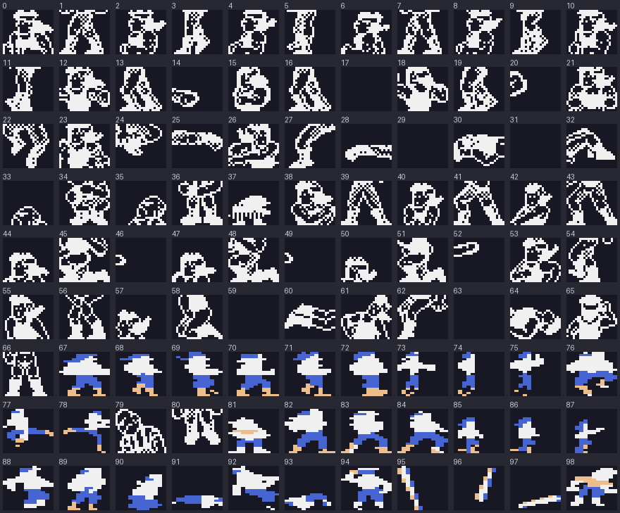

<meta charset="utf-8"><meta name="viewport" content="width=device-width,initial-scale=1"><title>Target Renegade</title>
<link rel="stylesheet" href="https://fonts.googleapis.com/css2?family=Lato:wght@400;700;900&family=IBM+Plex+Mono:wght@400;500&display=swap"><style>
:root{
  --bg:#23262d; --paper:#e9e7e1; --surface:#ffffff; --surface-2:#f1efea; --line:#d5d3cc; --line-soft:#e0ded8;
  --ink:#2f3136; --ink-soft:#55585f; --ink-mute:#80838a;
  --link:#1f5fa8; --link-hover:#154480; --accent:#1f5fa8;
  --amber:#c25a00; --cyan:#1f5fa8; --coral:#d04a3a; --green:#2a8a4a; --violet:#4a5bd6; --hl:#fff0c2;
  --chip:#2f3136; --chip-ink:#ffffff;
  --c64blue:#40318d; --c64grey:#686868;
  --fd:'Lato',system-ui,sans-serif; --fb:'Lato',system-ui,sans-serif; --fm:'IBM Plex Mono',ui-monospace,Menlo,monospace;
  --col:1080px; --gx:68px; --fs:17px; --lh:1.6; --hw:900; --h1:46px; --h2:26px; --sy:48px; --pp:26px; --r:10px;
  --plate-shadow:0 1px 2px rgba(0,0,0,.05),0 4px 14px rgba(0,0,0,.05);
}
*{box-sizing:border-box}
html{background:var(--bg);min-height:100%}
body{background:var(--paper);color:var(--ink);font-family:var(--fb);font-size:var(--fs);line-height:var(--lh);max-width:var(--col);margin:0 auto;min-height:100vh;padding:0 0 4rem}
h1,h2,h3{font-weight:var(--hw);letter-spacing:-.01em;text-wrap:balance;color:var(--ink);margin:0}
.wrap{padding:0 var(--gx)}
.hero{padding:48px var(--gx) 8px;text-align:left}
.eyebrow{font-family:var(--fm);font-size:12px;letter-spacing:.08em;text-transform:uppercase;color:var(--ink-mute);margin:0 0 10px}
.hero h1{font-size:var(--h1);line-height:1.15;letter-spacing:-.02em;margin:0 0 14px}
.hero .sub{margin:0 0 .6em;color:var(--ink-soft)}
section{padding:var(--sy) 0 24px}
section:last-of-type{border-bottom:none}
.fig{font-family:var(--fm);font-size:12px;letter-spacing:.08em;text-transform:uppercase;color:var(--ink-mute);margin:0 0 10px}
h2.t{font-size:var(--h2);margin-bottom:12px}
.lede{color:var(--ink-soft);margin:0 0 30px}
.plate{background:var(--surface);border:1px solid var(--line);border-radius:var(--r);padding:var(--pp);box-shadow:var(--plate-shadow)}
.cap{font-size:14px;color:var(--ink-mute);margin-top:14px;line-height:1.55}
.cap b{color:var(--ink);font-weight:700}
code{font-family:var(--fm);font-size:.82em;background:var(--chip);color:var(--chip-ink);border-radius:4px;padding:2px 6px;white-space:nowrap}

img{max-width:100%;height:auto;image-rendering:pixelated;border-radius:4px}
.shots{display:grid;grid-template-columns:1fr 1fr;gap:20px}.shots figure{margin:0}
@media(max-width:700px){:root{--gx:24px;--h1:36px}.shots{grid-template-columns:1fr}}
</style><style>.tr-toolbar{display:flex;align-items:center;gap:12px;flex-wrap:wrap}.tr-toolbar label{display:flex;align-items:center;gap:8px}.tr-toolbar button,.tr-toolbar select{font:inherit;padding:6px 10px}.tr-canvas{display:block;max-width:100%;height:auto;image-rendering:pixelated;margin:16px auto}.tr-pair{display:flex;justify-content:center;gap:36px;flex-wrap:wrap}.tr-pair figure{margin:0;text-align:center}.tr-pair canvas{width:192px;height:168px;image-rendering:pixelated;background:#171b28}.tr-readout{font-family:var(--fm);font-size:14px;line-height:1.6;min-height:3.2em}.tr-pad{display:grid;grid-template-columns:repeat(3,64px);gap:5px}.tr-pad button{font:inherit;padding:10px}.tr-pad button[aria-pressed="true"]{background:var(--link);color:white}.tr-layout{display:flex;gap:28px;flex-wrap:wrap;align-items:center}.tr-events{font-family:var(--fm);font-size:12px;max-height:170px;overflow:auto;white-space:pre-wrap}.tr-thumb{max-width:384px;display:block;margin:auto}input[type="range"]{max-width:240px}</style>
<style>.tablewrap table{border-collapse:collapse;width:100%;font-size:15px}.tablewrap th,.tablewrap td{padding:6px 12px 6px 0;border-bottom:1px solid var(--line);text-align:left;vertical-align:top}.tablewrap th{font-family:var(--fm);font-size:12px;letter-spacing:.04em;text-transform:uppercase;color:var(--ink-mute)}</style>
<style>.tablewrap table{border-collapse:collapse;width:100%;font-size:15px}.tablewrap th,.tablewrap td{padding:6px 12px 6px 0;border-bottom:1px solid var(--line);text-align:left;vertical-align:top}.tablewrap th{font-family:var(--fm);font-size:12px;letter-spacing:.04em;text-transform:uppercase;color:var(--ink-mute)}</style>
<!-- tabs -->
<header class="hero"><p class="eyebrow">1988 · Imagine Software · Commodore 64</p><h1>Target Renegade</h1><p class="sub">Each fighter is assembled from several of 99 stored pictures, and the screen scrolls by copying itself a piece at a time.</p></header><main class="wrap" data-part="resident">
<section id="sprites"><p class="fig">01 · Sprites</p><h2 class="t">Every fighter is built from the same 99 pictures</h2>
<p>The game stores 99 shared fighter and object pictures from <code>$5000</code> to <code>$68BF</code>. Each takes 64 bytes: 63 bytes of picture, which is 21 rows of three bytes, and one spare byte. A picture is 24 pixels wide in a hires sprite, or 12 pixels of two bits each in a multicolour sprite. Each is stored facing one way, and the game builds the other facing by reflecting it (<a href="index.html#sprites">the overview shows how</a>).</p>
<figure class="plate" style="margin:0"><figcaption class="cap">All 99 components, drawn from the bytes in the listing and numbered as the symbols are. Components 0 to 66, 79, and 80 look like hires outlines of heads, bodies, and legs, and are drawn that way. The rest look like multicolour fills and are drawn that way. The game's sprite-mode register chooses the mode for each sprite as it runs, so the choice here was made by eye, and the colours are this page's own.</figcaption></figure>
<p>Components 95, 96, and 97 are thin diagonal sticks at three angles. They look like the baseball bat, but the code that would confirm it has not been traced.</p></section>
<section id="layers"><p class="fig">02 · Assembly</p><h2 class="t">A fighter is more than one sprite</h2>
<p>A man on screen is taller than one 21-row sprite, so the game builds each fighter from components. The code marks three components for the player (<code>$94F8</code>) and two for each of the two ordinary enemies (<code>$950E</code>). The C64 has eight sprites. That makes seven components for fighters, and the eighth appears to carry a weapon that is held or lying on the floor. A motorbike takes four: a pair of top components that differ by two sprite numbers, and a pair of lower ones that differ by one (<code>$901B</code>, <code>$9023</code>). The last opponent is drawn from one of twenty top components and one of twenty lower ones, set 24 units apart to the side he faces (<code>$8D8B</code>).</p>
<p>Commodore User wrote that "each man is four sprites large" and that Mr. Big is "eleven sprites huge".<sup class="fn"><a href="about.html#src-10" title="Commodore User, April 1988, Mike Pattenden's review">10</a></sup> The component counts above do not match those numbers, so the magazine may have counted screen area in sprite-sized blocks. That is open. The sheet suggests one reading: hires outlines laid over multicolour fills. The sprite-assignment routines have not been traced far enough to say whether the game does that.</p></section>
<section id="scroll"><p class="fig">03 · Scrolling</p><h2 class="t">The screen is copied a piece at a time while it scrolls</h2>
<p>The playfield uses two screen buffers, at $4000 and $4400, and flips between them. The video chip's fine-scroll setting moves the picture by up to seven pixels. When it wraps, the character data must move by one whole cell. The game does not copy the whole screen in one frame. It copies the character data into the hidden buffer in pieces, one at each fine-scroll step: three 256-byte chunks and a 31-byte tail (<code>$AA12</code> for scrolling left, <code>$AA81</code> for right, <code>$A9A3</code> for up and down). At the next whole-cell step the colour shift below runs and the buffers swap.</p>
<p>Colour memory cannot be double-buffered, so it is shifted in one go at the swap: columns 1 to 39 move one cell left in each of 20 colour rows (<code>$A5FD</code>). The shift for the other direction leaves row 0 unchanged (<code>$A6A9</code>), and whether that shows on the screen has not been checked. While a coarse scroll is pending the main loop waits for the raster beam to pass line <code>$90</code> before it updates the score (<code>$A742</code>).</p></section>
<section id="map"><p class="fig">04 · Backgrounds</p><h2 class="t">A map 80 blocks wide and 20 deep</h2>
<p>Each load holds one background map, 80 columns by 20 blocks, shared by its stages, and each block is 16 characters (<code>$2A6C</code>). That is 320 by 80 character cells, and the <a href="levels.html">Maps / levels tab</a> draws all five. In the first stage the code has four camera-row targets, at rows 20, 40, 60, and 80 (<code>$8402</code>), for the vertical moves between its sections. That fits <i>Commodore User</i>'s account of a car park of four levels joined by a lift.<sup class="fn"><a href="about.html#src-10" title="Commodore User, April 1988, Mike Pattenden's review">10</a></sup> It has not been checked by playing through.</p></section>
<section id="panel"><p class="fig">05 · The panel</p><h2 class="t">The picture is split in two</h2>
<p>The status panel at the bottom uses its own screen and character set, so the display switches between the playfield and the panel part-way down. An interrupt at raster line <code>$CF</code> sets the display mode and switches to the panel's screen and font (<code>$AB6B</code>). A second at line <code>$D5</code> sets the mode back, schedules a third at <code>$EE</code>, and clears all eight sprite Y positions (<code>$AB98</code>). The camera transitions patch those line numbers. <a href="index.html#frame">The overview</a> rebuilds one such frame from memory, pixel for pixel.</p>
<figure class="plate" style="margin:0"><figcaption class="cap">The panel: score, stage, time, endurance, and lives, with the eyes that show damage.<sup class="fn"><a href="about.html#src-1" title="Imagine manual, Commodore 64, pages 14 and 15">1</a></sup></figcaption></figure></section>

</main>
